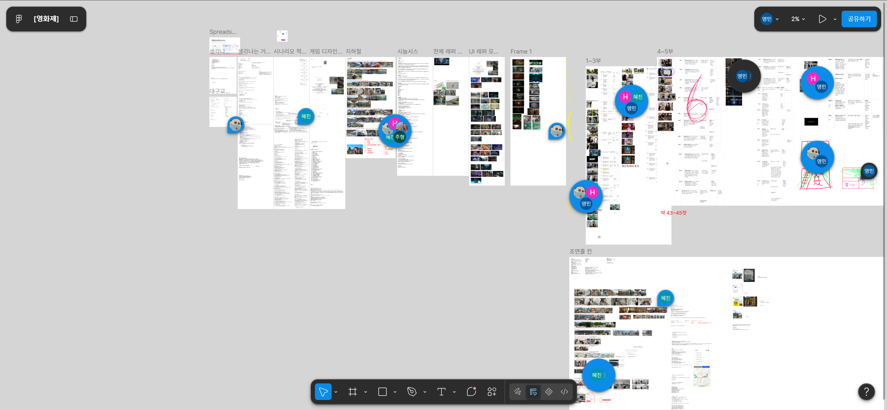
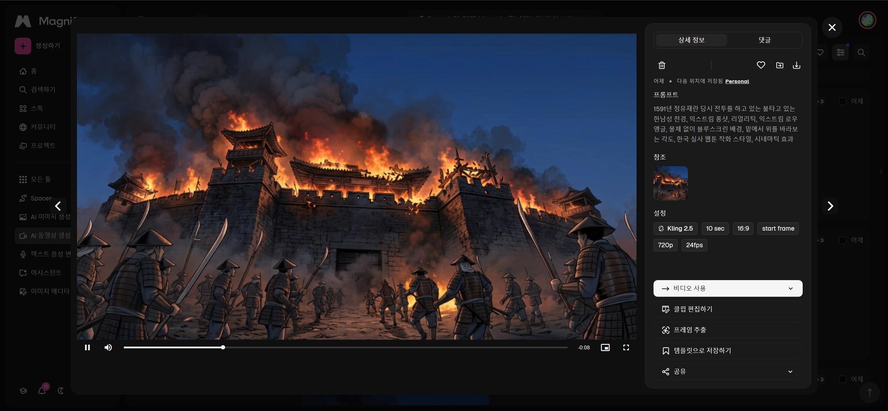
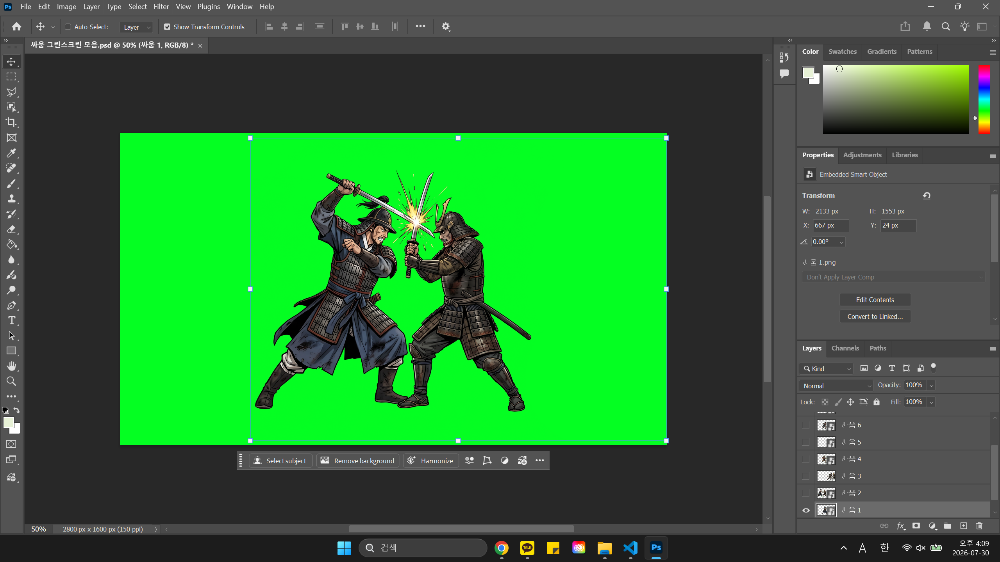
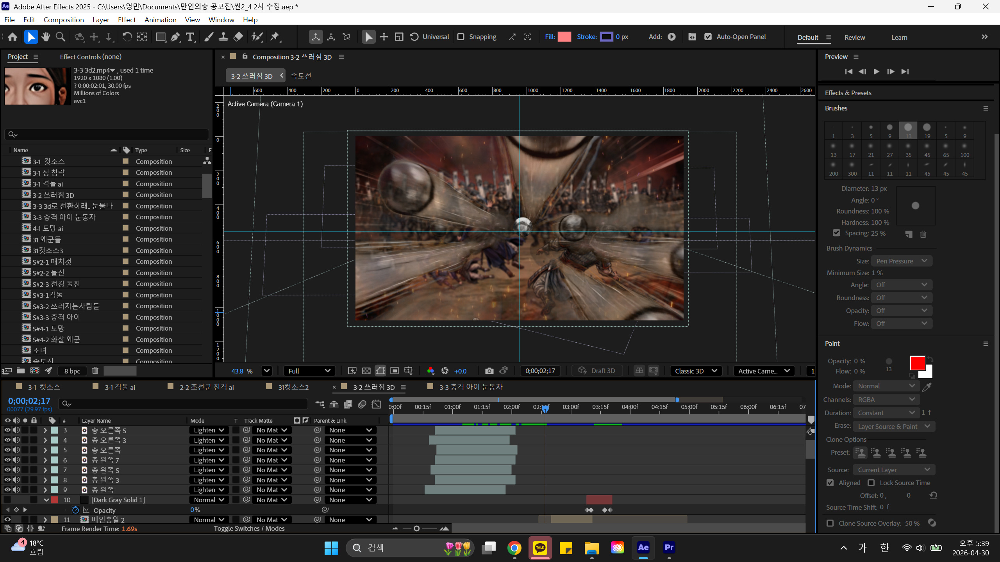

시청자가 무엇을 느끼고 이해해야 하는지 먼저 정합니다.
VIEWPOINT
영상을 판단하는 세 가지 기준
컷과 움직임, 사운드는 그 의도를 분명하게 만드는 도구입니다.
컷의 길이와 전환 타이밍으로 시선의 흐름을 만듭니다.
사운드와 색감까지 확인해 하나의 분위기로 연결합니다.
SELECTED PROJECTS
결과보다 먼저, 어떤 판단을 했는지
각 프로젝트의 주요 장면에 담긴 연출 의도와, 제작 과정에서 마주한 문제와 해결방식을 담았습니다.
PERSONAL · 2026
Canva Motion Kit
“만약 이런 기능이 있다면 어떨까?”
사용자 흐름을 UI 모션으로 설계하고
화면 전환과 사운드를 더해 실제 서비스처럼
표현했습니다.
TEAM · 2026
식물나라
“제품의 청량함과 사용감을 어떻게 표현하지?”
물의 움직임과 제형 중심의 컷 편집으로
제품의 청량함과 부드러운 사용감을 표현했습니다.
TEAM · 2026
당수
“정보와 재미를 동시에 빠르게 전달한다면?”
캐릭터 모션과 정보형 그래픽을 연결해
짧은 시간 안에 재미와 메시지를 함께
전달했습니다.
TOOLS & WORKFLOW
툴 활용 및 제작 방식
다양한 프로젝트에서 활용한 제작 툴과 실제 작업 방식을 소개합니다.





HOW I WORK
저는 이렇게 일합니다
성격을 설명하는 대신, 프로젝트에서 반복해 온 행동을 적었습니다.
기록하고 정리합니다
촬영 현장에서 테이크를 기록하고 촬영본을 분류해 후반 작업의 혼선을 줄였습니다.
꼼꼼함 · 체계성끝까지 확인합니다
모션이나 컷 편집에서 멈추지 않고 효과음과 색감, 장면 전환까지 확인합니다.
책임감 · 완성도먼저 실험합니다
리깅과 AI 소스, 3D 카메라를 테스트하고 목적에 적합한 방법을 선택합니다.
학습 태도 · 실행력팀의 흐름을 살핍니다
맡은 파트뿐 아니라 다음 작업자가 편하게 이어갈 수 있는 과정도 중요하게 생각합니다.
협업 · 배려